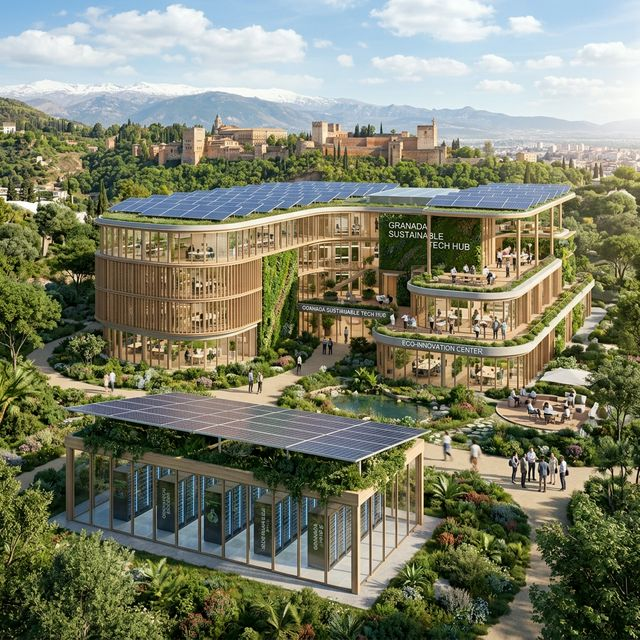
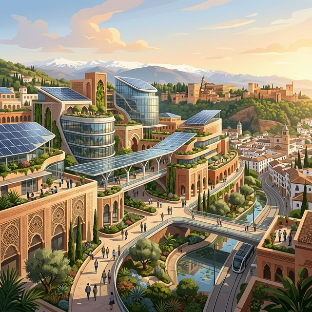

Nuestro compromiso con un desarrollo tecnológico y digital eficiente, ético y respetuoso con el medio ambiente.

Actividad principal: Desarrollo de software sostenible y servicios de infraestructura informática eficientes.
Descripción de la empresa: Somos una empresa tecnológica española especializada en la creación de soluciones digitales seguras. Contamos con 120 trabajadores distribuidos entre nuestra sede principal y una gran oficina de I+D en Granada. Desarrollamos aplicaciones web empresariales, gestión de redes, consultoría tecnológica y servicios de alojamiento cloud apoyados en un pequeño centro de datos propio y proveedores externos de infraestructura verde.

En Granada Tech Hub creemos que el futuro digital no tiene por qué estar reñido con la salud de nuestro planeta. Entendemos que el crecimiento de la infraestructura tecnológica tiene un impacto medioambiental directo debido al gran volumen de energía consumida y a los residuos generados (e-waste).
Por ello, nuestro compromiso absoluto con la sostenibilidad se fundamenta en mitigar nuestra huella de carbono, optimizar servidores para máximo rendimiento con mínima energía, y consolidar políticas internas de reciclado tecnológico y bienestar para nuestros empleados, convirtiendo nuestra actividad en un motor verde real para Andalucía y España.